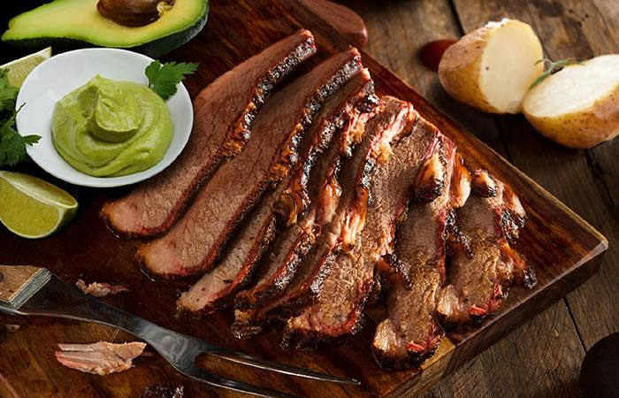

Mamona
La Mamona es uno de los platos tipicos de los llanos en Colombia, que tambien recibe el nombre de ternera a la llanera o becerra asada. Este plato consta del sacrificio de una becerra “criolla”; donde posteriormente se sacan las presas de carne, que luego se chuzan en grandes estacas puestas alrededor de una hoguera, a fuego lento, luego de haberle puesto sal. No se acostumbra a ponerle ningún condimento, la verdadera carne asada solo lleva sal y candela.
